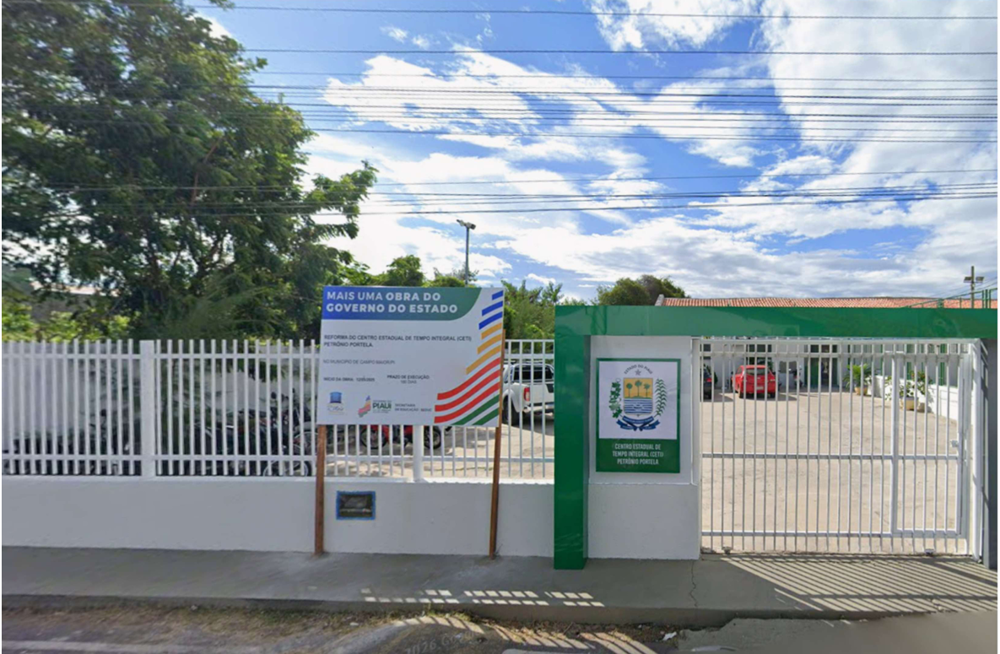

Piauí para o Mundo
Estudantes do CETI chegaram à final do programa e garantiram uma viagem ao Rio de Janeiro para conhecer o IMPA Tech.
Conheça o colégio, os projetos dos estudantes e as áreas de formação técnica.

O atual Centro Estadual de Tempo Integral Petrônio Portella foi inaugurado em 1º de maio de 1966, no bairro Centro, em Campo Maior, Piauí. A escola iniciou suas atividades em 1º de junho do mesmo ano, na Rua Afonso Pena, nº 151.
Sua construção foi resultado da cooperação entre o Brasil e os Estados Unidos, por meio de um convênio que envolveu o Governo do Piauí, a Sudene e a USAID. A iniciativa fez parte do programa Aliança para o Progresso, durante o governo de Petrônio Portella Nunes de Barros, que dá nome à escola.
Ao longo de seis décadas, a escola fez parte da formação de gerações de estudantes de Campo Maior. Atualmente, o CETI Petrônio Portella oferece Ensino Médio em tempo integral e conta com os cursos técnicos em Análises Clínicas, Farmácia e Desenvolvimento de Sistemas.
Conheça os projetos e confira os registros das atividades dos estudantes.
Estudantes do CETI chegaram à final do programa e garantiram uma viagem ao Rio de Janeiro para conhecer o IMPA Tech.
Espaço para compartilhar protótipos, testes e soluções desenvolvidas em atividades de robótica.
Os alunos têm acesso ao laboratório para desenvolver projetos nas áreas de saúde. Confira os registros das aulas práticas de Análises Clínicas e Farmácia.